k-Day 090｜最乾淨的角落
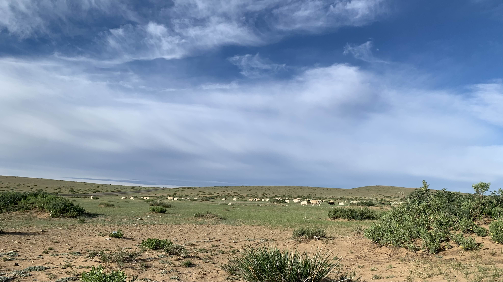
不確定是太陽曬醒還是被羊叫聲吵醒的，拉開帳篷一片風和日麗，又是美好的一天。
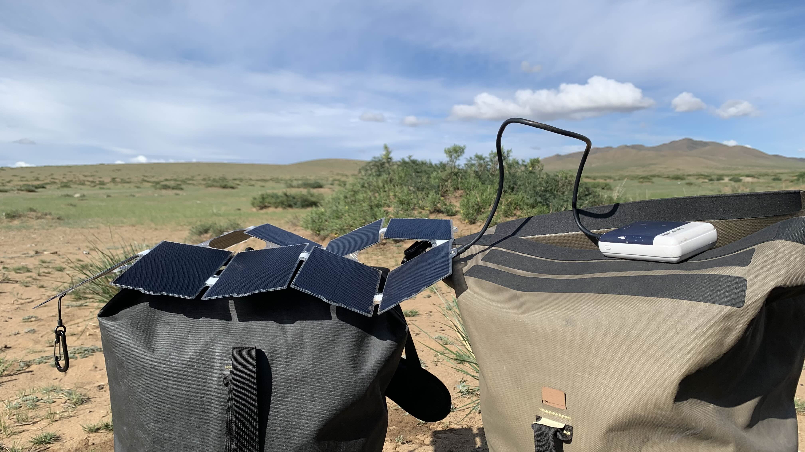
充電器們的電量都快耗盡了，旅途中第一次拿出太陽能板充電，沒想到速度頗快，真是個好東西。
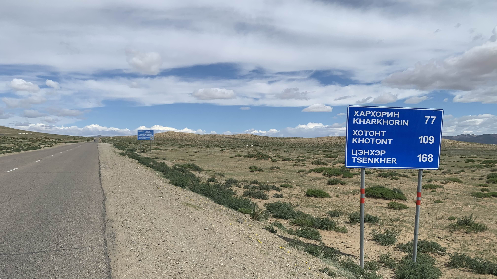
距離哈拉和林還有77公里，今日應該能抵達。
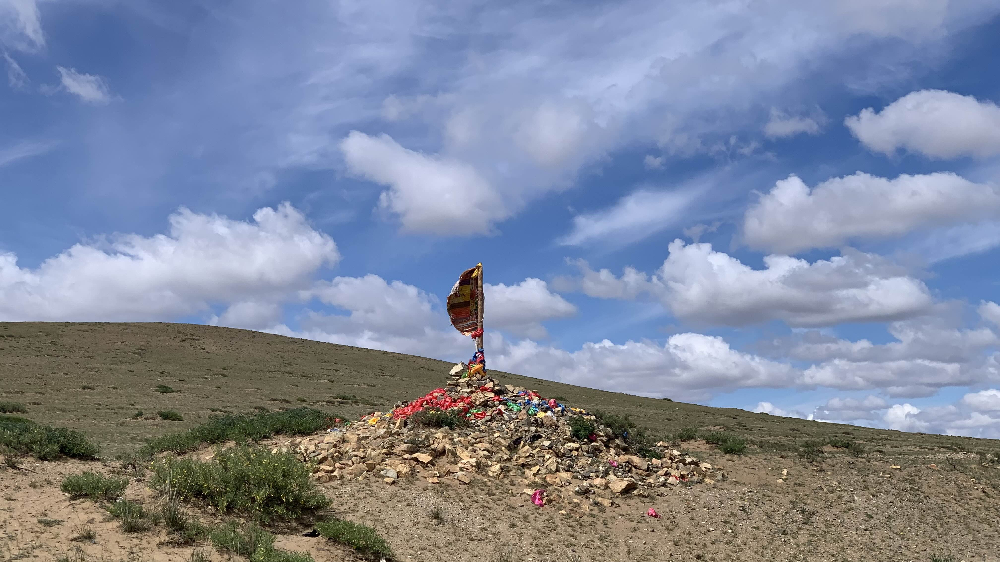
上坡後看到這個敖包，比先前看到的都更繽紛一些。
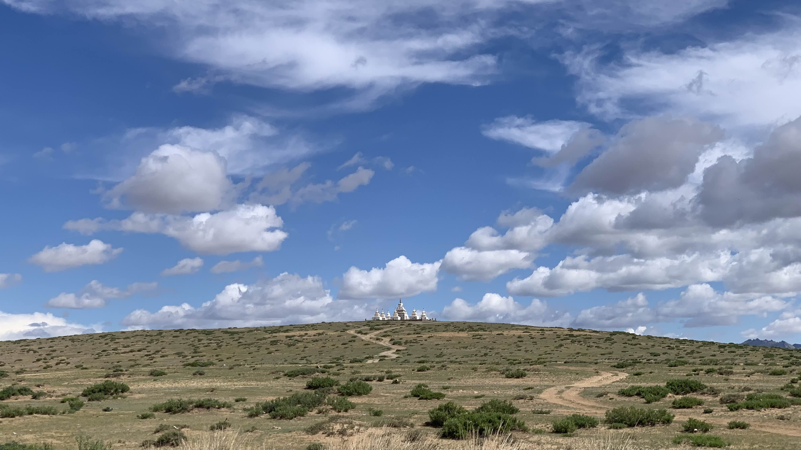
右邊的山頭上則有白色的寺廟，從出發時就在下方看到他們白色的尖塔。
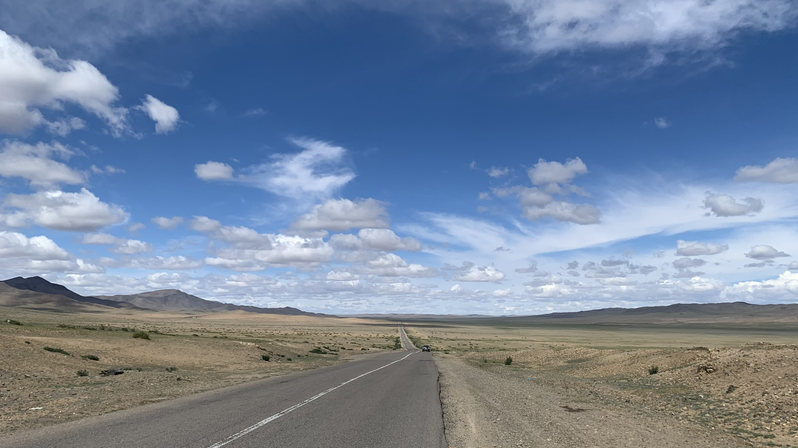
今日是正常的逆風，風不大時看著眼前的景色，還是能感覺到一絲愉悅的。
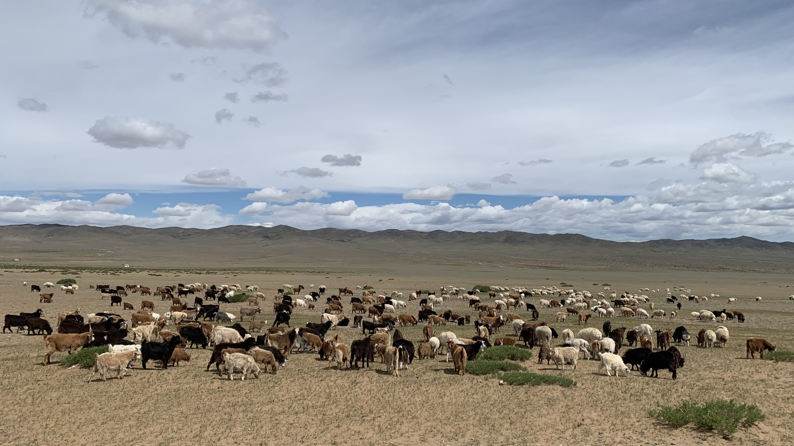
羊群數量越來越多，出現的也非常頻繁，也許是即將進入真正的草原區？
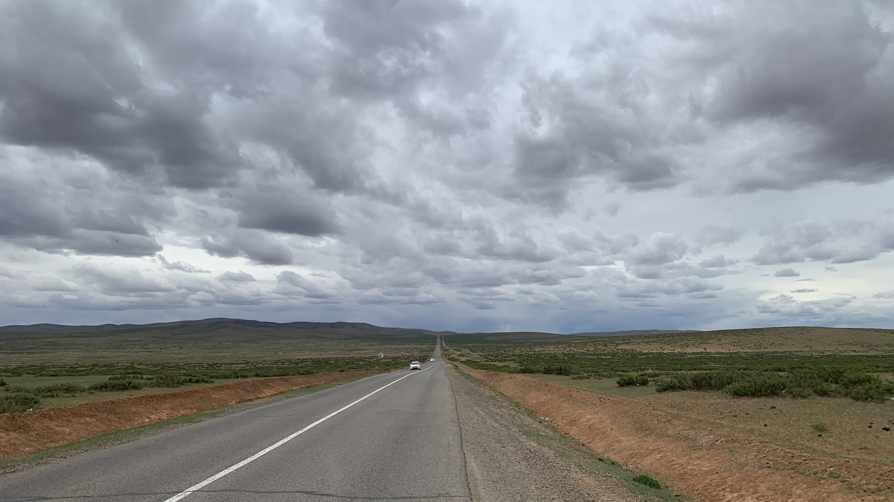
天空的雲還是很低，氣象顯示一整個禮拜都會下雨。
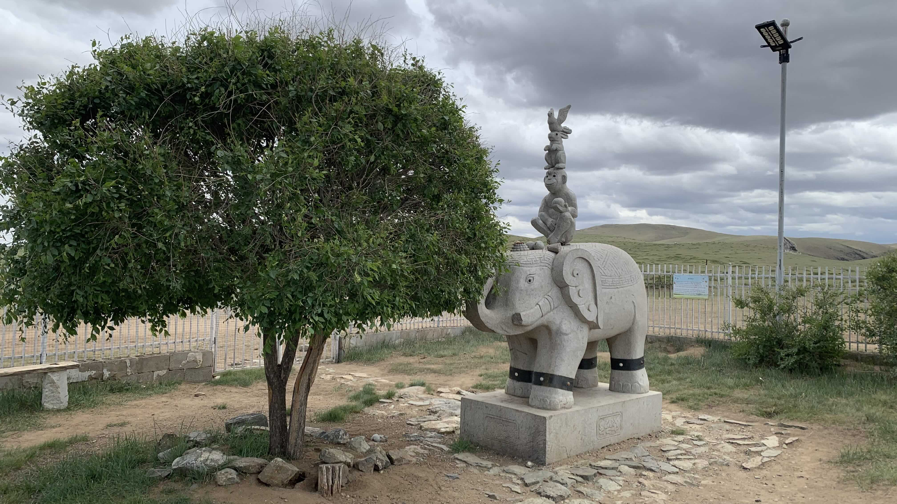
騎了約莫三十幾公里，在路旁發現奇特的雕塑，竟然還被柵欄圍起來。從下到上分別是：大象、猴子、兔子、雞，前面有顆被修剪成半圓形的樹。
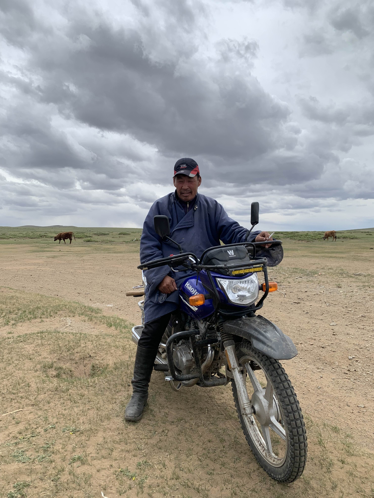
拿出飲料食物，坐在柵欄背風處休息。山頭來了一位騎著機車的牧民大哥。和其他人不一樣，他對我的旅行沒啥興趣，倒是掏出手機，跟我分享自己的蒙古包、家人、羊群等等照片。看完後掏出胸前蒙古袍內的望遠鏡，朝對面山頭掃視一陣，又把望遠鏡包回紅色棉質花巾收回兜裡。
看到這舉動略感不妙，難道我之前在路邊大便時，牧民們都能從遠處看到我的嗎？
收起望遠鏡的大哥說再過兩小時會下雨，他的蒙古包就在後面，要我拍下他的電話打給他。謝過他後跟他說我要走了，他看著我收拾睡墊和食物，說了一句：「Сайн яваарай」之前路邊聊天的牧民大哥也和我說這句，發音跟日文的「さようなら (Sayonara)」很像，翻譯成中文約莫是一路順風的意思。
即便有不少研究否認阿爾泰語系的存在，但是從文法、語感和語言背後隱藏的世界觀來看，我都是堅定的阿爾泰語系派。
回到柏油路上，看著大哥騎機車登上路旁最高的山丘，跨坐在機車上拿出包著紅布巾的望遠鏡，從高處向四面八方掃射，完全可以想像如果是騎著馬會有多帥氣。踩著上坡快到山丘旁時，對著遠方的他揮了揮手，他也朝著下方揮手。
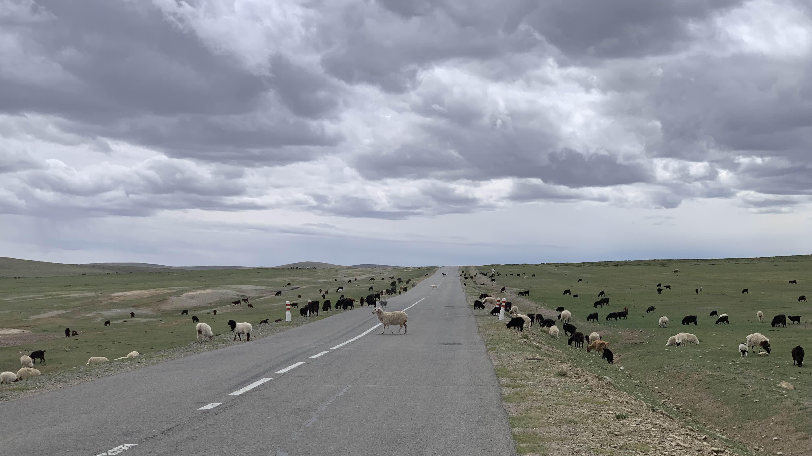
距離哈拉和林已經不遠了，路旁都是羊群，一點也不怕車子，悠閒的過馬路。
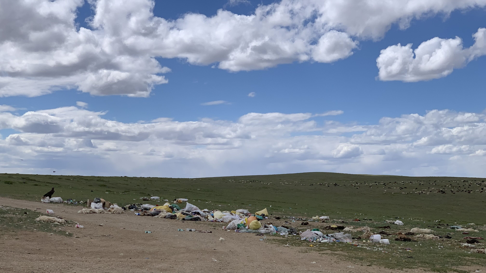
看到滿地垃圾，老鷹們正在啄食塑膠袋裡的腐食，看到這樣威猛的動物啄食塑膠製品，有種複雜的感覺。
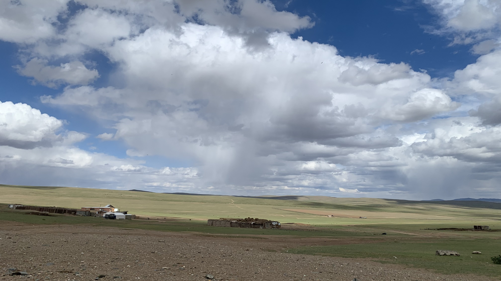
騎了一段路，躲在大路牌後休息，草原上的雲不知何故經常被撕扯下一些條狀，連接著地面。
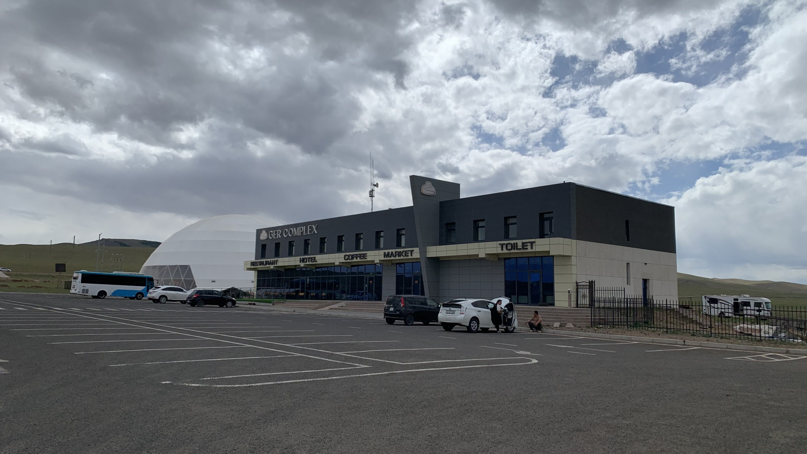
距離哈拉和林12公里處有個休息站，進門後看到有煎餅的選項，立刻點了一份。要價24000元，是昨天吃的四倍。
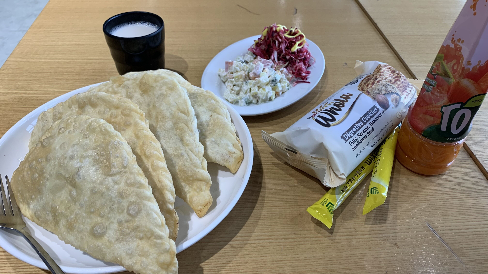
取餐後看到這樣大的份量還有點驚喜，一口咬下去，再咬一口，再咬一口，只有空洞軟爛的麵餅，吃到最底部，肉末不是現切的，湯汁也不鮮甜，還是硬著頭皮吃完。
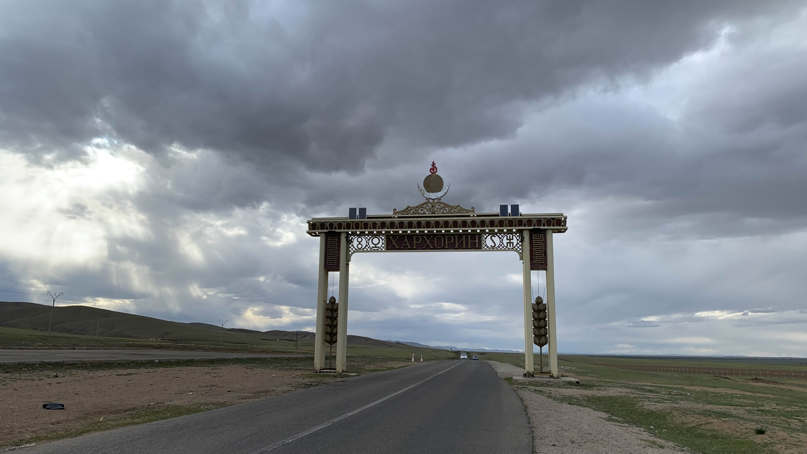
吃飽後往右邊轉彎就是前往哈拉和林市區之路，畢竟是帝國古都，我對這城市還是抱有些期待，經過城市牌坊下方時拍了一張照片。
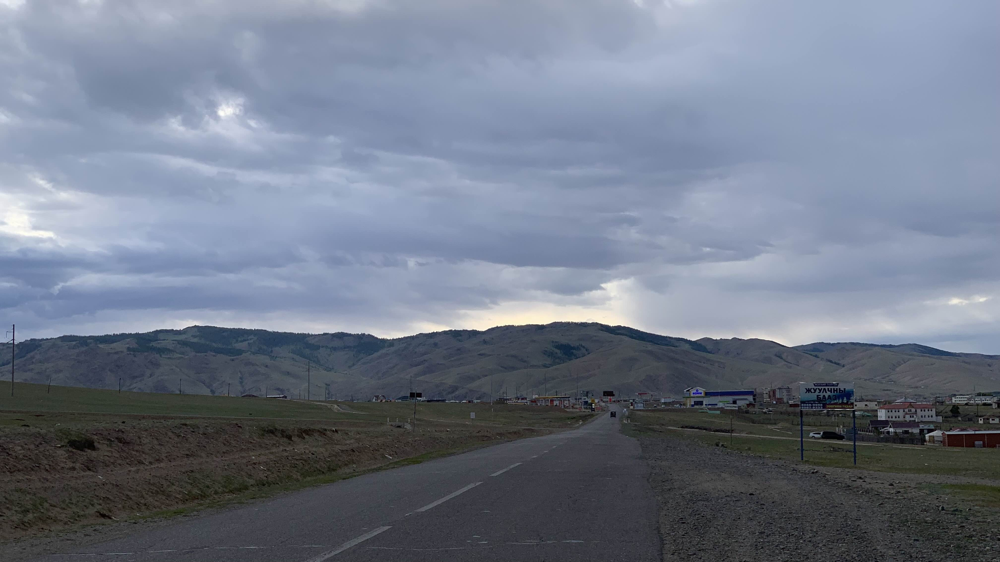
進城時，整個城市後方矗立著一排巨大的山脈。與烏蘭巴托周遭的草坡山谷不同，哈拉和林背後的山有天然屏障的威嚴感，山頂上除了草，還出現溫帶植物林的地貌。
據說鄂爾渾峽谷是相當有名的景區寶地，然而此刻我心裡浮現的是「蒙古合歡山？」這種想法著實無禮，浮現在腦中卻並非我所能控制的。身為百岳下的居民，心情不好時騎車上陽明山，想逛逛時騎上合歡山、和爺爺繞著大武山下的鳳梨田騎車的回憶，數不勝數的，與屏風似的高山有關的日常景象使我對眼前的山更多的是理所當然，而沒有太多讚嘆。
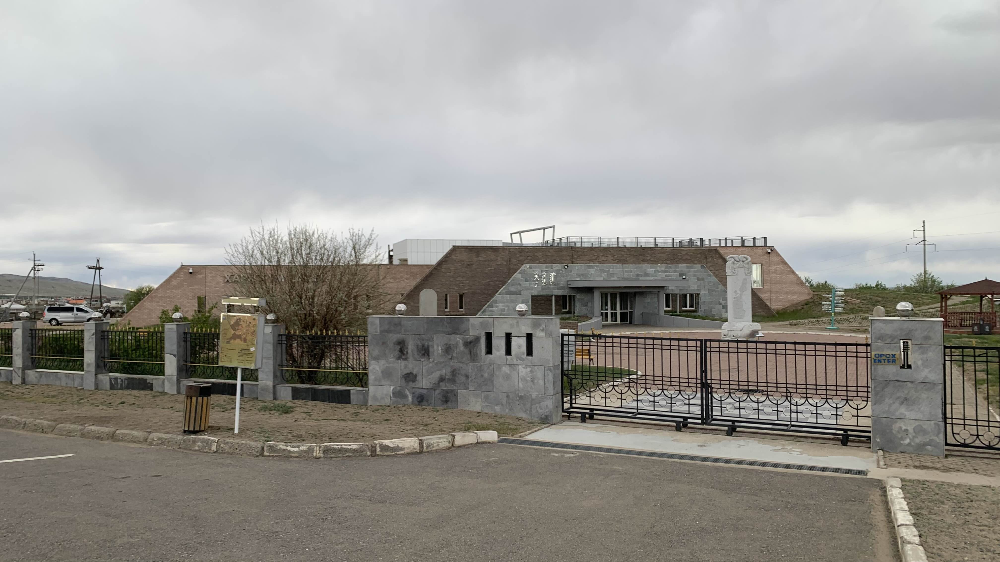
進城的時機抓得不錯，到超市採買了一些飲料食物，直接轉進城市邊緣的博物館。晚上七點多，這裡是今天預計紮營的地點。
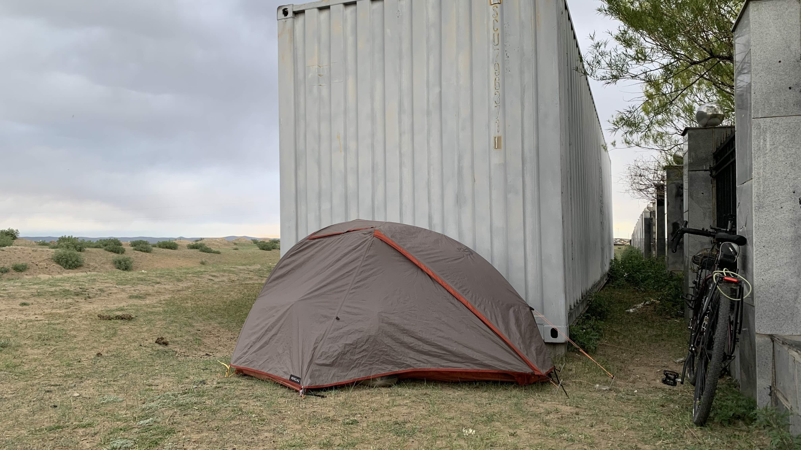
繞著圍牆走，果然有不少貨櫃和圍牆搭起的死角，挑選了面河的那一邊，開始仔細觀察地上的碎玻璃。
沒有碎玻璃，連煙蒂都沒有，此處是大蒙古國最乾淨的角落。我的直覺是正確的，博物館在哪個國家都是不太會有人走動的地方。
今日花費： 水、士力架、蜂蜜蘋果茶 10500、蘿蔔汁、咖啡包、燕麥餅 14100、晚餐 24000元